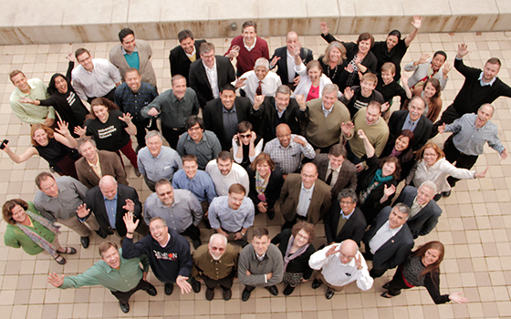
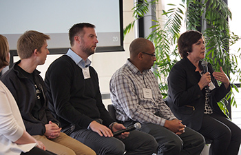
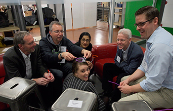

25 U.S. institutions join Epicenter's national Pathways to Innovation Program.

Leaders of the 25 new Pathways program teams met at Stanford for the first time in January 2015.
In January 2015, Epicenter selected 25 new U.S. institutions to join the second cohort of the Pathways to Innovation Program for faculty and administrators. The program is designed to help institutions fully incorporate innovation and entrepreneurship into undergraduate engineering education. The schools in the new cohort join an inaugural group of 12 institutions that have participated in the program since January 2014.
Leaders from each Pathways team met at Stanford University on January 14 (view photos). During this meeting, they met the members of their new community and explored topics such as the two-year process of the program, creative team buildling, program development and the student role in higher educaiton change. A second meeting will bring together teams of faculty and administrators from each school in Phoenix, AZ, February 16-18, to analyze the opportunities at their schools and develop plans for transforming the undergraduate engineering experience.

Leaders from the 2014 cohort of the program spoke to the new team leaders at Stanford in January.
Ongoing innovation in engineering is required to maintain America’s global competitiveness and address pressing problems. Faculty and administrators participating in the Pathways program are taking on this challenge and leading their universities into a new era of engineering education that prepares students to tackle big problems and thrive in this ever-changing economy.
“There are 500,000 students in the U.S. majoring in engineering and computer science fields,” said Tom Byers, director and co-principal investigator of Epicenter and professor at Stanford University. “These students are expected to enter industry with technical knowledge as well as a diverse set of skills and attitudes that help them to innovate, collaborate and create value. As educators, we need to better prepare this generation of students for the workforce and position them for success in their careers.”

At the January team leaders meeting, faculty took part in exercises and sessions at Stanford's d.school.
The following universities were selected for the 2015 Pathways program:
- Case Western Reserve University
- Clemson University
- Colorado School of Mines
- Florida Institute of Technology
- Hampton University
- Illinois Institute of Technology
- James Madison University
- Loyola University Maryland
- Missouri University of Science & Technology
- New York Institute of Technology
- North Carolina A&T
- Oregon State University
- Southern Methodist University
- Temple University
- Universidad del Turabo
- University of Alabama - Birmingham
- University of Delaware
- University of Hawaii at Manoa
- University of Nebraska - Lincoln
- University of North Dakota
- University of Puerto Rico - Mayaguez
- University of Texas - Arlington
- University of Texas - El Paso
- Washington State University
- Wichita State University
Participating schools assemble a team of faculty and academic leaders to assess their institution’s current offerings, design a unique strategy for change, and lead their peers in a two-year transformation process. Program teams receive access to models for integrating entrepreneurship into engineering curriculum, custom online resources, guidance from a community of engineering and entrepreneurship faculty, and membership in a national network of schools with similar goals.
Current projects at the 12 Pathways 2014 schools include innovation certificates and majors, maker and flexible learning spaces, first-year and capstone courses, faculty fellows programs, and innovation centers. Additionally, several cross-institutional collaborations have resulted from the first group of schools.
“Our first group of Pathways schools have already made an enormous impact on the undergraduate engineering students at those institutions,” said Liz Nilsen, a Pathways program manager and senior program officer at VentureWell. “These new schools joining Pathways have equally ambitious aspirations. Having the experience of the first group to help guide them will accelerate the impact of their efforts.”
Learn more about the Pathways to Innovation Program and view a list of all Pathways schools at epicenter.stanford.edu/pathways-to-innovation.